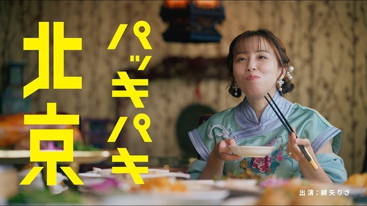
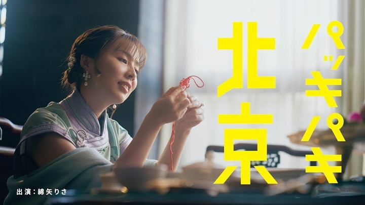
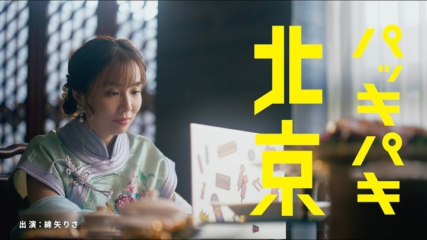
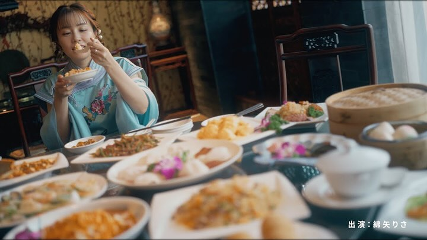

PRODUCTION STAFF
綿矢りさ 新著「パッキパキ北京」 集英社文芸 公式告知動画




.
【CA work】
綿矢りさ 新著「パッキパキ北京」
集英社文芸 公式告知動画
撮影助手として携わらせて頂きました。
#綿矢りさ #パッキパキ北京
ーーーーーー
Credit
Staring：Risa Wataya
Director：Yoshito Fukushima
Cinematographer：Shinichiro Kobayashi
Camera Assistant：Ryota Morikawa
Gaffer：Yamato Watanabe
Lighting Assistant：Hirari Okuyama
Sound Operator : Koichi Nakajima
Hair&Make：Chiaki Tsuda
Colorist：Kento Katayama
Location：Daichinro
Production Assistants：Sakura Misawa
Production Manager：Juo Oba
Creative Director / Producer：Kodai Kurosawa
Production：Wakuzawa inc.